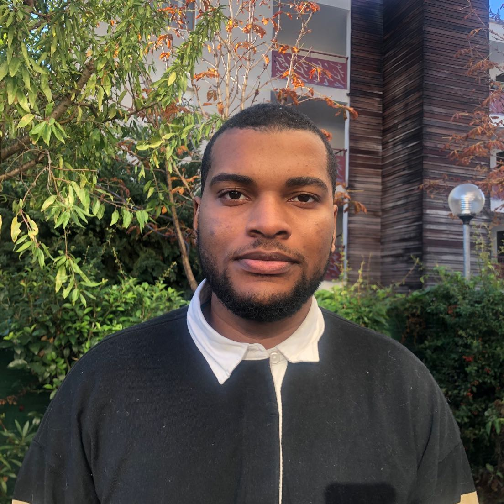

system-labs
Labs perso pour révision des commandes Linux et exercices pratiques.
Je conçois et industrialise des environnements fiables et automatisés — systèmes Linux, conteneurs, CI/CD et supervision.

Labs perso pour révision des commandes Linux et exercices pratiques.
Mon homelab complet : déploiement, reverse-proxy, WireGuard, sauvegardes et automation.
Application de gestion de tâches en Java Spring Boot : API REST, PostgreSQL et CI/CD.
Ingénieur en informatique diplômé d'un Master, j'interviens à l'interface entre le développement logiciel et l'infrastructure. J'aborde les projets avec une vision globale, de la conception d'applications à leur industrialisation, en privilégiant l'automatisation, la fiabilité et la maintenabilité des environnements techniques.
Master Informatique, Parcours : Ingénierie du développement logiciel — Faculté des Sciences de Luminy, Marseille (2023 — 2025)
Licence Informatique, Parcours : Métiers du développement informatique — Université d'Aix-Marseille, Campus de Saint-Charles, Marseille (2022 — 2023)
DUT Informatique — IUT d'Aix-en-Provence (2020 — 2022)